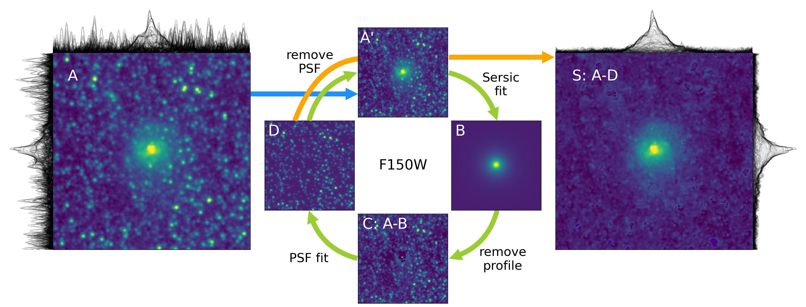

Welcome to Sphot's documentation!
{kind=link}
What is Sphot?
Sphot ("es"-phot, S-PHOT) is a Python package for astronomical image analysis. It is designed to provide a simple and efficient way to perform photometry on galaxy images with overlapping foreground stars. Sphot provides a set of tools to perform "foreground cleaning" on images, i.e., to remove the light from the stars in the image before performing photometry on the galaxies. Some of the major functionalities of Sphot include:
Fit PSF models to stars near/on top of a background galaxy
Fit a Sersic profile to a galaxy in a crowded stellar field
Separate foreground stars and background galaxies
Estimate the background/foreground/sky model in a crowded field
Perform aperture photometry on galaxies
and many more...
Users can choose from a range of interfaces to perform these tasks:
A simple, fully-automated commandline script
run_sphotThe top-level functions
sphot.core.run_basefit()andsphot.core.run_scalefitThe individual functions in the
sphotpackage to make your own recipe
Each use case is documented in the tutorials section.
When to use Sphot?
Sphot has a simple objectuve: to enable precise and accurate photometry of galaxies seen through crowded, foreground stellar fields. Try Sphot if you are looking to:
measure the SED of a background galaxy (z>0.1) seen through a nearby galaxy (z<<0.01)
remove a foreground MW star from an image of deep field galaxies
fit a Sersic profile to a noisy galaxy image with a bright star in the field
What is required to use Sphot?
Sphot is a python package that depends on major astronomy packages, including Astropy and Photutils. You need at least the following:
Python 3.11 or later (due to Astropy compatibility)
A cutout image of the target galaxy. If you wish to use multi-band images, each image needs to be pixel-aligned and reprojected onto the same scale.
A PSF image for the stars to be removed. The pixel scale of the PSF image should be an integer multiple of the pixel scale of the galaxy image.